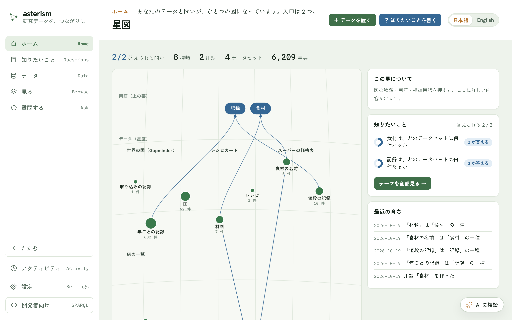
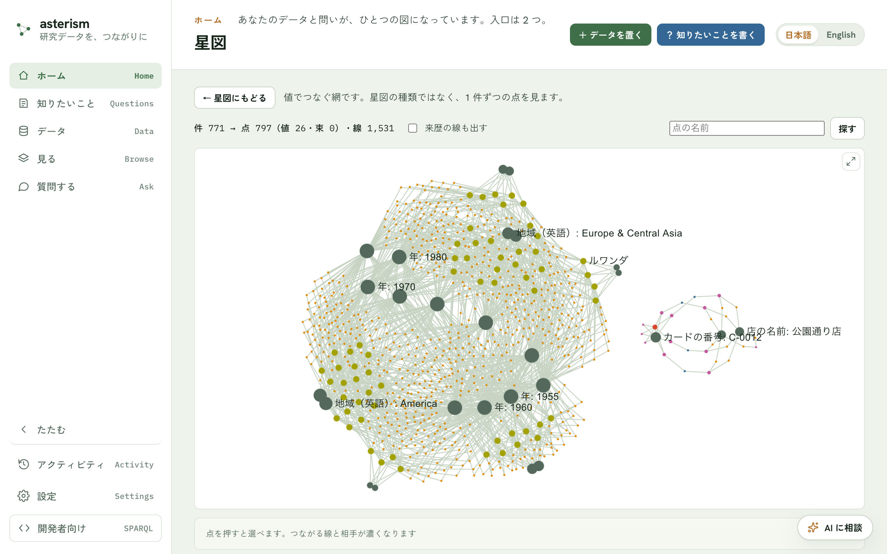
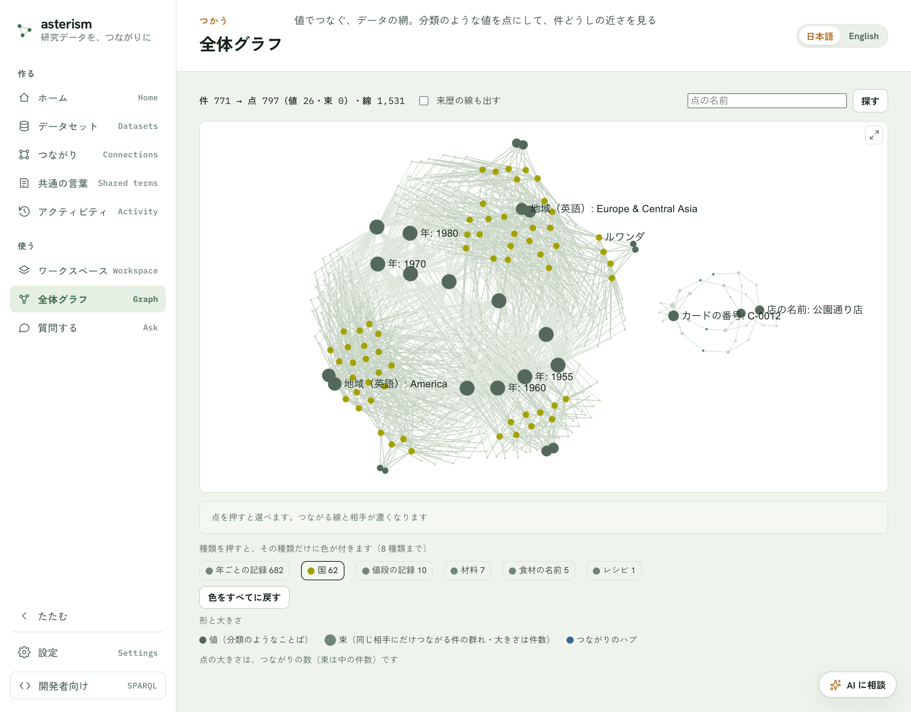

星図 — データと問いが、ひとつの図になる
星図とは
アプリを開いたときのホームです。公開したデータと、知りたいこと（問い）が、1 枚の紙の星図になって見えます。「今あるデータで、どの問いに答えられるか」をひと目で見るための画面です。
| 図の中のもの | 描きかた |
|---|---|
| 種類 | 緑の星。大きさは件数（表示中の最小〜最大の対数で、面積に比例）。名前は星の下、件数はその下 |
| データセット | 星座。中の種類を細い線で結び、名前を添えます（枠は引きません） |
| 用語 | 上の帯の青い札。種類から札へ線が伸び、「〜の一種」は矢じり付き、「同じもの」は矢じり無し。星がまだ無い用語は薄い青で「まだ星がない」と出ます |
| 標準用語 | 下の帯（地平線）の琥珀色の札。用語の札の下に「≡ cmso:Material」のような小さな字が出ます |
| つながり | 星座のあいだにある青い 4 つ角の星。参加している種類へ線が伸びます |


同じデータからは、いつも同じ絵が描かれます（配置は毎回同じ手順で決めます）。データセットは公開の古い順に並び、新しく公開したデータセットは最後に加わります。すでにある星座の位置は動きません。
見かた
- 一番上の 1 行は「答えられる問い N / M」だけです（M 個の問いのうち、答えるデータがある問いがN 個。問いが 1 つも無いときは「問いはまだありません」）。種類・用語・データセット・事実の数は、図の右上の「…」の「数で見る」で読めます。
- 図の直下の 1 行は凡例です（● 種類 ● 用語・つながり ● 標準用語）。
- 点（星・札・丸）にマウスを載せると、その点につながるものだけが濃くなり、ほかは薄くなります。
- 名前は、重ならないものだけが出ます。件数の多い星の名前から先に出ます。マウスを載せた点の名前はいつも出ます。
- 種類が 60 を超える、またはデータセットが 8 を超えると、データセットを 1 つの丸にまとめます。丸の大きさはデータセットの件数で、押すと中の種類が右に出ます。
右の欄
図の右には、カードが 1 枚だけ出ます。点を選んでいれば「この星について」、選んでいなければ「知りたいこと」です。
- この星について — 星・丸・用語・標準用語・つながりを押すと、ここに詳しい内容が出ます。
- 星: 名前、主ボタン「◯◯ を見る」（その種類のページ＝見るへ 1 クリック）、データセット（押すとそのデータセットのページ）、件数、入っている用語、標準用語、「ひとこと決める」。この種類に掛かる決めたことがあれば、「決めたこと N 件 →」から一覧に入れます。
- 用語: 主ボタン「◯◯ を見る」（用語のページ）、入っている種類、答える問い、標準用語。星がまだ無い用語には、データを置くと星が入る、と出ます。
- 標準用語・つながり: 1 行の説明と、結ばれている用語・種類。
- 知りたいこと — 問いの一覧です。丸の満ち方は、答えるデータセットの数（公開したデータセット全体に対する割合）。押すと、その問いに要る用語の札が出て、図でも光ります。「テーマを全部見る」で知りたいことへ移ります。
公開した直後と、ひとこと決めた直後に答えられる問いが増えたときだけ、欄の上に「答えられる問い 5 → 6」と6 秒だけ出ます。
育つ瞬間
かんたんモードで公開を終えた画面の「星図を見る」ボタンから星図に移ると、公開した種類の星が1 度だけ灯ります（輪が広がります）。リロードしても繰り返しません。
「…」の操作 — 静かな表示・数・画像
図の右上の「…」を押すと、次の 4 つが出ます。
- 「静かな表示」— 灯る動きを止めます。選びはこのアプリに覚えられます。OS の「視差効果を減らす」設定も同じに扱います。
- 「画像で保存」— いまの星図を PNG にして保存します（選びや濃淡は入りません）。デスクトップ版では保存に対応していません。ブラウザ版から保存してください。
- 「数で見る」— 種類・用語・データセット・事実の数と、図と同じ内容の表（星座・星・件数・用語・標準用語）を開きます（読み上げやコピー用）。
- 「中身まで見る」— 下の節の、値の網に移ります。
空のとき
- データも問いも無いとき: 見本の星図が薄く重なり、「ここに、データと問いから星図が育ちます」と出ます。入口は図の中のボタン「＋ データを置く」「？ 知りたいことを書く」の 2 つです。ふだんは図の左下にあります。
- データだけがあるとき: 「用語の無い種類が N 個あります」と出ます。知りたいことを書くと、名前が付きます。
- 問いだけがあるとき: 「答えるデータがまだありません」と出ます。データを置くと、合う種類を探します。
中身まで見る（値の網）
図の右上の「…」から「中身まで見る」を選ぶと、同じ場所に、公開したデータ全体を 1 枚の網として見る画面が開きます（アドレスは #/home?deep=1。以前の #/network もここに着きます）。星図が種類の設計図なのに対し、こちらは中身そのものの網です。「星図にもどる」で戻ります。
- 件（1 つ 1 つのデータ）と、件どうしのつながりが点と線になります。
- 地域や年のような、少ない種類の値を何度も使う項目は、その値も点になります。同じ値を使う件が、その点のまわりに集まります。
- 同じ相手にしかつながらない件が 20 件以上あれば、1 つの束にまとめます（たとえば測定点が 3,000 件あっても、束の点 1 つになります）。
- 取り込みの記録のような来歴の線は、はじめは出しません。


見かた
- 上の一行は、件の数から点と線がいくつになったかの集計です（例: 件 3,800 → 点 776（値 25・束 2）・線 1,497）。
- 点の色は種類ごとに決まっていて、データが増えてもほとんど変わりません（ほかの種類と色がぶつかったときは、隣の色になります）。色が付くのは 8 種類までで、残りは灰色です。図の下の凡例で種類を押すと、その種類だけに色が付き（8 種類まで）、ほかは灰色になります。「色をすべてに戻す」で元に戻ります。


値の点は濃い灰色、つながりのハブは青、束は大きめの丸で、中の件数が大きさになります。大きさはつながりの数で決まります。
- 名前が同じ種類は、凡例でデータセット名を添えて見分けます。選んだ点の帯にもデータセット名が出ます。
- 名前は、重ならないものだけが出ます。拡大すると細かい名前も出てきます。点にマウスを載せると、その点につながる線と相手がいったん濃くなり、名前も出ます。
- ホイールで拡大・縮小、ドラッグで動かせます。凡例は図の下にあります。
操作
- 点を押すと選べます。選んだ点につながる線と相手だけが濃くなり、ほかは薄くなります。何もないところを押すと選びを外します。
- 図の下の帯に、名前・種類・つながりの数が出ます。
- 件とハブ: 「このページを開く」で、その 1 件のページへ移ります。
- 値と束: 「一覧で開く」で、その値を持つ件（束なら束の中の件）の絞り込みのページへ移ります。
- 「来歴の線も出す」を入れると、取り込みの記録などの線と点が加わります。
- 「名前で探す」に入力して「探す」ボタンを押すと、一致した点に寄って選びます。
- 右上のボタンで「大きく見る」ことができます。選びや拡大の状態はそのままです。
- 点が多すぎるときは「点が多いので一部だけ出しています」と出て、つながりの多い点から残します。